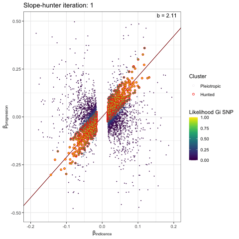
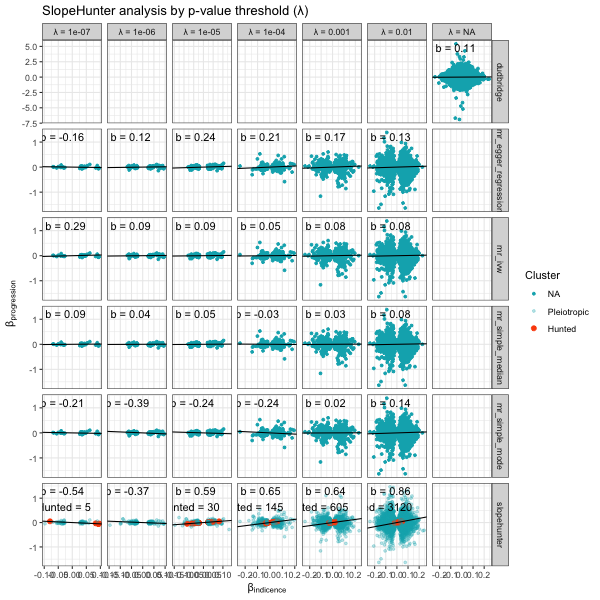
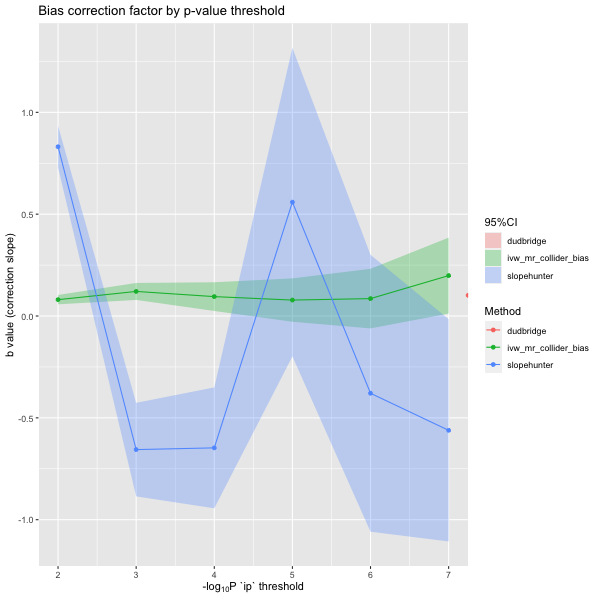
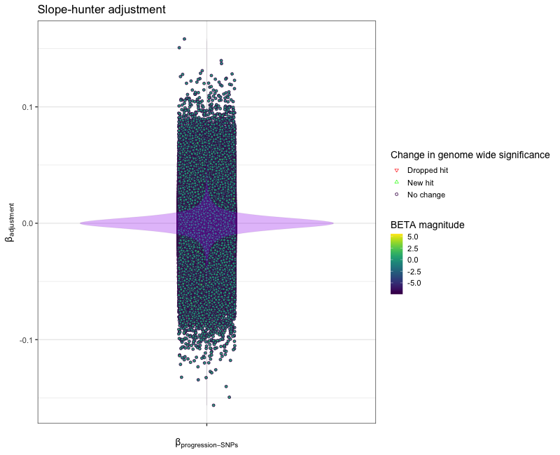

collider_bias.RmdAn example of using the collider bias functions to investigate the degree of index event (collider) bias in your GWAS progression data. We start with independent variants from the incident GWAS of interest - this will will require pre-processing with appropriate clumping parameters. All variants from the progression GWAS are included in the initial step.
library(genepi.utils)
# read in the data
gwas_clumped_incidence <- data.table::fread(clumped_incidence_path)[index==TRUE, ] # take only the index SNPs
gwas_progression <- data.table::fread(progression_path)Run the SlopeHunter expectation-maximization method to estimate the bias adjustment factor. The algorithm uses model-based clustering and proposes that the distributions of the incidence(GI) and progression (GP) BETAs can be written like so:
\[ \binom{\beta_{GI}}{\beta'_{GP}} \sim \color{#F8766D}{ \pi_{1}N \begin{pmatrix} \underline{0}, \begin{bmatrix} \sigma_{I}^{2} & b_{1}\sigma_{I}^{2} \\ b_1\sigma_{I}^{2} & b_{1}^{2}\sigma_{I}^{2} \\ \end{bmatrix} \end{pmatrix}} + \color{#619CFF}{ \pi_{2}N \begin{pmatrix} \underline{0}, \begin{bmatrix} \sigma_{I}^{2} & b_{1}\sigma_{I}^{2} + \sigma_{IP} \\ b_1\sigma_{I}^{2} + \sigma_{IP} & b_{1}^{2}\sigma_{I}^{2} + \sigma_{P}^{2} + 2b_{1}\sigma_{IP} \\ \end{bmatrix} \end{pmatrix}} \color{gray}{ + \pi_{3} \begin{pmatrix} \eta_{0} \\ N(0, \sigma_{P}^{2}) \end{pmatrix} + \pi_{4} \begin{pmatrix} \eta_{0} \\ \eta_{0} \end{pmatrix}} \]
The values: \[{\pi_{1}, \pi_{2}, \pi_{3}, \pi_{4}}\] … are the probabilities that a SNP belongs to the respective clusters.
The first thing to note is that we can filter out SNPs from cluster 3
and 4 by only including SNPs with a significant association (P-value)
with incidence - this is the ip parameter. The problem is
then reduced to finding two clusters that best fit distributions 1 and 2
of the equation above. The SlopeHunter EM algorithm iteratively
determines which SNPs belong to each distribution and once complete the
adjustment factor (slope gradient) can be determined from group 1,
i.e. only those SNPs thought to solely cause incidence.
This function’s code is adapted from the SlopeHunter R package and if using this method the SlopeHunter package should be referenced as the original source.
Running the Slope-hunter algorithm requires initialising parameters.
ip is the initial p-value by which to filter the
incident GWA variants. Variants with a p-value greater that
ip will be removed from the analysis (i.e. variants in
clusters 3 & 4).pi0 is an initial guess for the proportion of variants
that only associate with incidence (i.e. belong to cluster 1).sxy1 is an initial guess for the covariance between
incidence and progression betas in cluster 2.The standard error of the slope is estimated with bootstrapping, 100 samples in the case below.
result <- slopehunter(gwas_i = gwas_clumped_incidence,
gwas_p = gwas_progression,
merge = c("CHR"="CHR", "BP"="BP"),
ip = 0.001,
pi0 = 0.6,
sxy1 = 1e-5,
bootstraps = 0)
str(result)We can visualise the iterative EM algorithm like so. The variants are allocated to either cluster 1 (incidence only) or cluster 2 (incidence and progression) based on how well they conform to defined bivariate distributions for each cluster. The key point is that the incidence-only distribution has a linear relationship between incidence and progression betas, with no constant term - i.e. we search for a straight line passing through the origin. At each iteration the distribution parameters are recalculated (variance / s.dev / cov) and variant reassigned to either cluster 1 or 2, until the model converges.
p <- plot_slopehunter_iters(gwas_i = gwas_clumped_incidence,
gwas_p = gwas_progression,
ip = 0.001,
pi0 = 0.6,
sxy1 = 1e-5,
x_lims = c(-0.2, 0.2),
y_lims = c(-0.5, 0.5))
p
In the expectation (E) part of the Slope-hunter algorithm we
initially set the covariance matrix of the first component: \[
\color{#F8766D}{
\pi_{1}N
\begin{pmatrix}
\underline{0},
\begin{bmatrix}
\sigma_{I}^{2} & b_{1}\sigma_{I}^{2} \\
b_1\sigma_{I}^{2} & b_{1}^{2}\sigma_{I}^{2} \\
\end{bmatrix}
\end{pmatrix}}
\] The off-diagonal components are set to
sxy0 = sx0*sy0*dir0*0.95 where sx0 and
sy0 are the standard deviations of the incidence and
progression betas, respectively, and the dir0 term is the
sign() of the covariance - which is positive in this
case:
Cov(incidence, progression)
In the maximisation (M) step of the algorithm, we update
dir0 as the sign() of
sum(pt*xbeta*ybeta)/sum(pt). pt is a positive
array and so the sign depends on the relative proportions of negatives
and positive of the product of xbeta and
ybeta. This is positive in our case, as visualised in this
histogram:
product(incidence, progression)
The effect, I believe, is that a positive slope is maintained at each iteration of the algorithm.
The algorithms can be sensitive to the incidence p-value threshold
ip. Too high and null variants without any effect on
incidence will be included. Too low and variants will small, but
potentially significant, effects on incidence will be removed. It is a
good idea to investigate the stability of the adjustment factor estimate
to difference in ip threshold.
We can run many combinations of the above analyses by defining sets/vectors of parameters. Note: be careful with large numbers of parameters as this will quickly lead to large numbers of combinations. e.g.
…will lead to 27 separate analyses.
We can use the analyse_collider_bias() function to run
all combinations of methods and parameters. Here is the stability of the
b-slope with different p-values (ip).
results <- analyse_collider_bias(gwas_i = gwas_clumped_incidence,
gwas_p = gwas_progression,
merge = c("CHR"="CHR", "BP"="BP"),
methods= c("slopehunter","mr_collider_bias","dudbridge"),
tsmr_method = c("mr_ivw","mr_egger_regression","mr_simple_median","mr_simple_mode"),
ip = c(0.01,0.001,0.0001,0.00001,0.000001,0.0000001),
pi0 = c(0.6),
sxy1 = c(1e-05),
bootstraps = 100)
p <- plot_slope(results)
p
Plotted another way with
plot_correction_stability().
p <- plot_correction_stability(results)
p
Once the parameters have been set and b estimate of the
correction calculated we next need to apply the correction to the
(biased) progression GWAS data. As the correction uses the incidence
data we can only apply this to variants that appear in both incidence
and progression datasets (the harmonised dataset).
\[ \beta_{GP} = \beta_{GP}^{'} - b_{1}\beta_{GI} \]
# apply correction
corrected_gwas <- apply_collider_correction(gwas_i = gwas_incidence,
gwas_p = gwas_progression,
merge = c("CHR"="CHR", "BP"="BP"),
b_correction_factor = 0.6473,
b_std_err = 0.2162)
# calculate difference in raw and adjusted betas; and effect on genome wide significance
corrected_gwas[, beta_diff := BETA_progression - adjusted_beta]
sig_change_levels <- c("Dropped hit", "New hit", "No change")
corrected_gwas[, sig_change:= data.table::fcase(P_progression < 5e-8 & adjusted_p >= 5e-8, factor("Dropped hit", levels=sig_change_levels),
P_progression >=5e-8 & adjusted_p < 5e-8, factor("New hit", levels=sig_change_levels),
default = factor("No change", levels=sig_change_levels))]
# plot difference
p <- ggplot2::ggplot(data = corrected_gwas,
mapping = ggplot2::aes(x=factor(""), y = beta_diff)) +
ggplot2::geom_point(mapping = ggplot2::aes(shape = sig_change,
fill = adjusted_beta,
color = sig_change), alpha=0.95, position = ggplot2::position_jitter(seed = 1, width = 0.1)) +
viridis::scale_fill_viridis() +
ggplot2::scale_shape_manual(name = "Change in genome wide significance",
values = c("Dropped hit"=25, "New hit"=24, "No change"=21), drop = FALSE) +
ggplot2::scale_color_manual(name = "Change in genome wide significance",
values = c("Dropped hit"="red", "New hit"="green", "No change"="#44015410"), drop = FALSE) +
ggplot2::geom_violin(alpha = 0.3, fill="purple", color="#44015410") +
ggplot2::theme_bw(base_size = 14) +
ggplot2::labs(title = 'Slope-hunter adjustment',
x = expression("\u03B2"[progression-SNPs]),
y = expression("\u03B2"[adjustment]),
color = "Change in genome wide significance",
fill = "BETA magnitude")